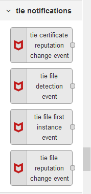

Prerequisites
To use the McAfee Threat Intelligence Exchange (TIE) DXL Node-RED client package, the following prerequisites must be satisfied:
Node-RED must be installed.
The OpenDXL Node-RED Docker repository provides instructions on how create a Node-RED container in Docker.
For more information on other Node-RED installation approaches, see https://nodered.org/docs/getting-started/installation.
Note: In order to be able to import examples properly from the Node-RED UI, version 0.18.0 or newer of Node-RED should be installed.
The OpenDXL Node-RED core package must be installed in Node-RED.
Note: If you use the OpenDXL Node-RED Docker image, the OpenDXL Node-RED core package should be installed automatically on the first run of the Docker container.
McAfee Threat Intelligence Exchange Server installed and available on DXL fabric
Node.js 4.0 or higher installed.
Installation
The TIE DXL Node-RED client package can be installed via the following approaches:
Node-RED Based
With this approach, the TIE DXL Node-RED client package is installed from within Node-RED itself. See the Node-RED Based Installation section below for more information.
Command Line Installation
With this approach, the TIE DXL Node-RED client package is installed via npm from the command-line on the host where the Node-RED server is running. See the Command Line Installation section below for more information.
Node-RED Based Installation
Browse to your Node-RED server.
In the upper-right corner, press the side menu button.
Choose the
Manage paletteoption in the menu drop-down list.From the
Paletteuser settings tab, click on theInstalltab.In the
search modulestext box, enterdxl-tie.Next to the entry for
@opendxl/node-red-contrib-dxl-tie-clientin the search results, press theinstallbutton.On the
Installingconfirmation dialog, press theInstallbutton.A dialog containing text like the following should appear when the installation is complete:
Nodes added to palette: * dxl-tie...Click on the
Closebutton to close theUser Settingstab.
Command Line Installation
Before installing the TIE DXL Node-RED client package, first navigate in a
command shell to the user directory which you have configured for Node-RED. The
.node-red directory under the user's HOME directory is the default user
directory for Node-RED.
For Mac and Linux-based operating systems, run the following command:
cd ~/.node-redFor Windows, run the following command:
cd %HOMEPATH%\.node-redTo install the library from a local tarball for a Mac or Linux-based operating system, run the following command:
npm install ./lib/opendxl-node-red-contrib-dxl-tie-client-0.1.0.tgz --saveTo install the library from a local tarball for Windows, run:
npm install .\lib\opendxl-node-red-contrib-dxl-tie-client-0.1.0.tgz --saveTo install the library via the npm package registry, run the following command:
npm install @opendxl/node-red-contrib-dxl-tie-client --saveAfter the installation is complete, restart Node-RED and browse to your Node-RED server.
Confirming the Installation Result
After the installation is complete, you should see several tie operations and
tie notifications nodes in the left column:


For more information, see the Node-RED Configuration documentation.